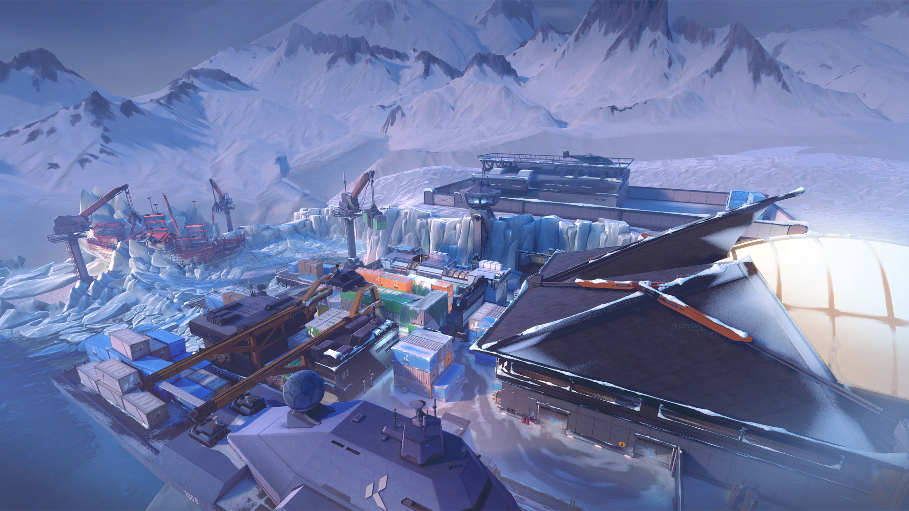
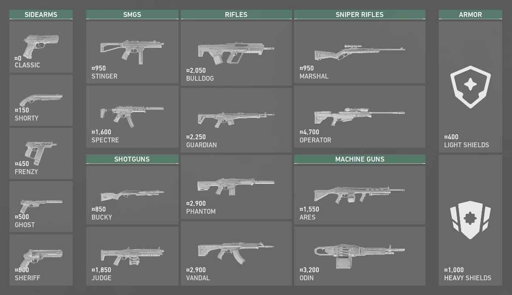

Valorant adalah sebuah game FPS gratis yang dibuat oleh Riot Games untuk sistem operasi Windows. Dengan
konsep yang mirip dengan CS:GO, permainan ini hadir dengan dua tim, yaitu lima lawan lima pemain.
Dalam satu kali permainan, terdiri dari 24 ronde. Dengan masing-masing tim terbagi menjadi attacker dan
defender. Attacker adalah tim yang bertugas untuk memasangkan bom. Sementara tim defender mempunyai tugas
untuk mencegah hal tersebut terjadi. Oh iya, setelah berjalan 12 ronde, kedua tim akan bertukar peran.
Map
Map atau ruang untuk bertanding di Valorant ada tujuh buah (update terakhir). Dengan setiap map punya
tantangannya
sendiri-sendiri. Untuk bertanding kamu pun diharapkan bisa menghafalkan setiap map-nya. Karena ada banyak
jalan rahasia yang bisa dipakai.
Ascent
Sebuah tempat bermain terbuka untuk perang kecil memperebutkan posisi dan baku tembak membelah kedua lokasi
di Ascent. Tiap lokasi bisa diperkuat dengan pintu bom yang tak bisa dibalikkan; setelah terpasang, kamu
harus menghancurkannya atau mencari jalan lain. Serahkan teritori sesedikit mungkin.
Split
Jika ingin berkembang pesat, kamu harus ke atas. Sepasang lokasi terbelah oleh bagian tengah lebih tinggi
yang memungkinkan pergerakan cepat menggunakan dua tali untuk naik. Tiap lokasi dibangun dengan menara
menjulang yang vital untuk pengendalian. Jangan lupa perhatikan sisi atas sebelum semuanya terlambat.
Haven
Di bawah sebuah biara yang terlupakan, sebuah teriakan terdengar dari Agen rival yang bertarung
memperebutkan tiga lokasi. Ada lebih banyak teritori untuk dikuasai, tetapi sisi pertahanan bisa
memanfaatkan bangunan ekstra untuk mendesak secara agresif.
Bind
Dua lokasi. Tak ada jalur mid. Harus pilih kiri atau kanan. Mana yang kamu pilih? Keduanya menawarkan jalur
langsung bagi penyerang dan sepasang teleporter satu arah untuk memudahkan pengepungan dari samping.
Ice Box

Medan perangmu selanjutnya adalah lokasi penggalian rahasia milik Kingdom yang diselimuti oleh es arktik.
Kedua lokasi pabrik yang terlindung oleh salju dan logam memerlukan kecakapan horizontal. Manfaatkan tali
luncur gantung dan musuh tak akan bisa melihat kedatanganmu.
Breeze
Telusuri reruntuhan bersejarah atau gua-gua tepi laut di nirwana tropis ini. Jangan lupa siapkan
perlengkapan pelindung untuk saat kamu berada di ruang terbuka dan bertarung jarak jauh. Awasi terus
sekitarmu agar kamu bisa bersantai di Breeze.
Fracture
Sebuah fasilitas penelitian sangat rahasia hancur lebur oleh eksperimen radianite yang gagal. Dengan opsi
pertahanan yang terbagi seperti petanya, pilihan ada di tanganmu: temui penyerang di wilayah mereka sendiri
atau bersiap-siaplah untuk menghadapi serangan.
Agent
Agent adalah karakter yang dapat dimainkan di VALORANT, yang mewakili agen dari
Protokol VALORANT. Setiap agen
berfungsi sebagai kelas yang berbeda dengan empat kemampuan dan memiliki Kontrak yang unik.
Cari lebih banyak cara untuk menempatkan Spike dan ubah tampilan musuhmu dengan ahli tempur, ahli strategi,
dan pemburu dari segala deskripsi.
Jett
Mewakili negara asalnya, Korea Selatan, gaya bertarung Jett yang tangkas dengan banyak pengelakan
memungkinkannya mengambil risiko yang tak bisa dilakukan orang lain. Dia mengitari tiap
pertempuran, menebas musuh sebelum mereka menyadari apa yang terjadi.
Reyna
Tertempa di jantung Meksiko, Reyna mendominasi kombat tunggal dan menjadi makin kuat tiap
berhasil membunuh. Kepiawaiannya hanya terhambat oleh keahlian mentahnya, membuatnya sangat
bergantung pada performa.
Phoenix
Berasal dari Britania Raya(Inggris), kekuatan bintang Phoenix terpampang dalam gaya bertarungnya,
mengobarkan medan perang dengan kilat dan api. Saat sendiri maupun dibantu rekannya, dia akan
menerjang ke pertarungan sesuka hatinya.
Raze
Raze membawa kemeriahan dari Brasil bersama kepribadian besar serta senapan besarnya. Dengan gaya
bermain trauma benda tumpul, dia unggul dalam menyapu musuh bertahan dan mengosongkan ruang sempit
dengan ledakan besar.
Yoru
Agen asal Jepang Yoru melubangi realitas untuk menyusup ke wilayah musuh tanpa terlihat. Dengan
bermodal tipuan dan agresi yang seimbang, dia menghabisi tiap target sebelum mereka sadar ke mana
harus melihat.
Neon
Agen dari Filipina, Neon, melesat maju dengan kecepatan yang mencengangkan, menyemburkan pancaran
bioelektrik secepat tubuhnya menghasilkannya. Dia berlari untuk mengejutkan musuh, lalu menyerang
mereka lebih cepat dari kilat.
Brimstone
Bergabung dari AS (Amerika Serikat), persenjataan orbital Brimstone memastikan pasukannya selalu
berada di posisi
menguntungkan. Kemampuannya untuk melancarkan bantuan secara presisi dari jarak jauh menjadikannya
seorang komandan tempur tak tertandingi.
Viper
Seorang ahli kimia dari Amerika, Viper mengerahkan sejumlah perangkat kimia beracun untuk
mengendalikan medan perang dan menghalangi pandangan musuh. Jika racun tak membunuh buruannya,
permainan pikirannya pasti menghabisi mereka.
Omen
Sesosok hantu dalam pikiran, Omen berburu di dalam bayangan. Dia membutakan musuh, berteleportasi
di penjuru medan tempur, lalu membiarkan rasa paranoid menghantui selagi musuh berusaha menerka di
mana dia akan menyerang berikutnya.
Astra
Agen asal Ghana, Astra, memberdayakan kekuatan semesta untuk mereka ulang medan tempur sesuka
hatinya. Dengan kendali penuh atas wujud astralnya dan bakat meramal strategisnya, dia akan selalu
unggul dari musuuhnya.
Sova
Terlahir dari musim dingin abadi tundra Rusia, Sova melacak, menemukan, dan menghabisi musuh
dengan efisiensi dan presisi dahsyat. Busur khusus dan kemampuan pengintaian luar biasanya
memastikan bahwa kamu bisa lari, tetapi tak bisa sembunyi.
Breach
Breach, orang bionik dari Swedia, menembakkan ledakan kinetik kuat tertarget untuk membuka jalan
secara agresif menembus wilayah musuh. Kerusakan dan gangguan yang dia timbulkan memastikan
pertarungan tak akan pernah adil.
Skye
Berasal dari Australia, Skye dan konco-konconya menjelajahi wilayah-wilayah berbahaya. Dengan
kreasi yang menghambat gerak musuh, dan kekuatannya untuk menyembuhkan orang lain, tempat paling
aman dan kuat bagi para anggota timnya adalah di sisinya.
KAY/O
KAY/O adalah mesin perang yang diciptakan demi satu tujuan: melumpuhkan para radiant. Kekuatannya
untuk menekan ability musuh melucuti kemampuan musuhnya untuk melawan balik, memberikan keunggulan
besar bagi dirinya dan sekutunya.
Sage
Benteng pertahanan dari Tiongkok, Sage memberikan rasa aman bagi dirinya dan timnya ke mana pun
dia pergi. Bisa membangkitkan teman yang gugur dan menahan gempuran sengit, dia menjadi sumber
ketenangan dalam medan perang bagai neraka.
Cypher
Seorang makelar informasi dari Maroko, Cypher adalah jaringan pengintai satu orang yang mengawasi
tiap gerakan musuh. Tak ada rahasia yang aman. Tak ada manuver yang tak terlihat. Cypher selalu
mengawasi.
Killjoy
Sang genius dari Jerman. Killjoy mengamankan medan perang dengan mudah menggunakan segudang
penemuannya. Jika kerusakan dari peralatannya tak menghentikan musuh, debuff robot-robotnya akan
mengatasinya.
Chamber
Berpakaian rapi dan bersenjata lengkap, desainer senjata dari Prancis, Chamber, menghalau
penyerang dengan presisi yang mematikan. Dia memanfaatkan persenjataan kustomnya untuk
mempertahankan barisan, menembak musuh dari jauh, dengan kontingensi yang tersusun untuk tiap
rencana.
Weapon

Untuk jenis senjata yang ada di Valorant sebenarnya kurang lebih sama dengan CS:GO. Hanya saja, untuk
jenisnya mungkin sedikit berbeda. Pada dasarnya kamu bisa membeli armor, senjata pertama, dan senjata yang
kedua.
Di awal kamu akan diberikan uang sebesar 800 untuk membeli pistol atau light armor. Setelah itu, kamu bisa
menggunakan heavy armor dan senjata dengan jenis machine gun ataupun shotgun. Intinya makin sering tim kamu
menang, uang untuk membeli senjata pun akan makin banyak.